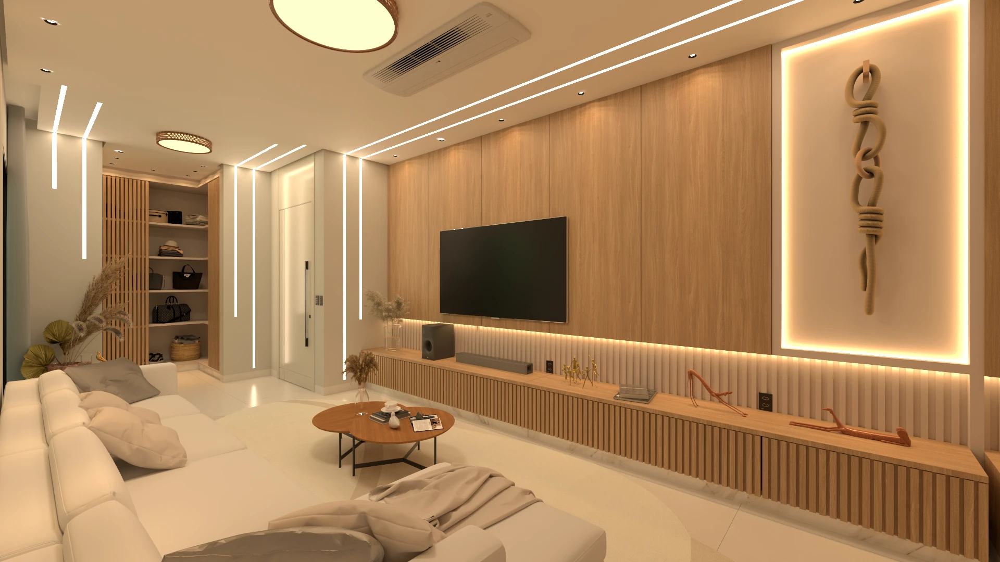
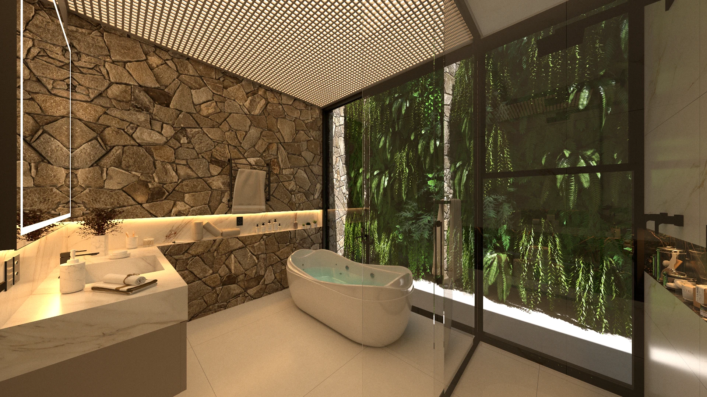
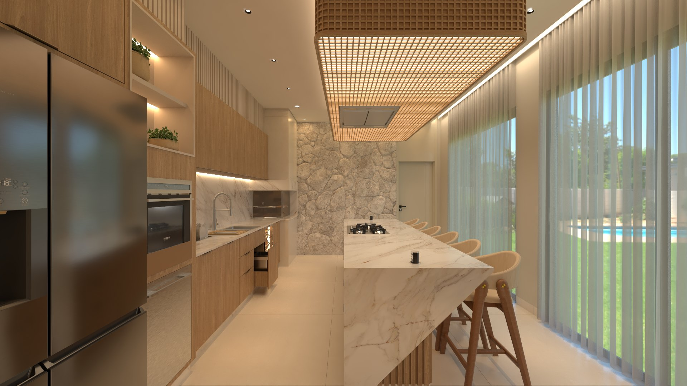

LUCIANA & LUCIANO / RESIDÊNCIA
A casa,
em dois tempos.
Espaços para compartilhar.
Um refúgio para contemplar.
Escolha um ambiente e descubra seus detalhes.

01 / CONVIVERHALL · ESTAR · JANTAR · COZINHA
Ambientes
Integrados.
Madeira, pedra e luz em um mesmo percurso.
CONHECER O AMBIENTE ↗
02 / CONTEMPLARBANHO · TEXTURAS · RECOLHIMENTO
Banheiro
Suíte.
O encontro da matéria com a quietude.
CONHECER O AMBIENTE ↗Arquitetura para ser vivida.
Detalhes para permanecer.
ARQUITETURA & INTERIORES
GABRIEL FERMINO ARQUITETURA / INTERIORES
Espaços que
se encontram.
A vida acontece entre os espaços.
PERCORRER O AMBIENTE ↗EXPLORAR CADA DETALHEO PROJETO
Matéria que aproxima.
Espaços que acolhem.
A madeira traz continuidade. O quartzito revela seus desenhos. A luz acompanha o percurso entre o hall, o estar, a mesa e a cozinha — ambientes que se encontram sem perder sua identidade.
Percorrer as imagens ↗
01 / A experiência espacial ↗DA VISÃO GERAL AO DETALHE
Entre no espaço.
Conheça cada peça.
Explore o modelo original, selecione um móvel e consulte as pranchas correspondentes. As informações do projeto reunidas em um só lugar.
Abrir projeto 3D ↗Consultar documentação executiva ↗UMA NOVA FORMA DE PERCORRER
O projeto,
por dentro.
Caminhe pelos ambientes, descubra diferentes pontos de vista e experimente a iluminação do espaço.
Iniciar Tour 3D ↗Para explorar cada móvel e suas pranchas, acesse Projeto 3D.
EXPLORAÇÃO ESPACIAL
O projeto em 3D
Preparando a visualização do projeto…
CATÁLOGO DO PROJETO
Matéria, forma
e função.
Marcenaria, arquitetura e referências de produtos.
PERSPECTIVAS DO PROJETO
A casa,
em imagens.
Uma sequência de espaços, texturas e luz.